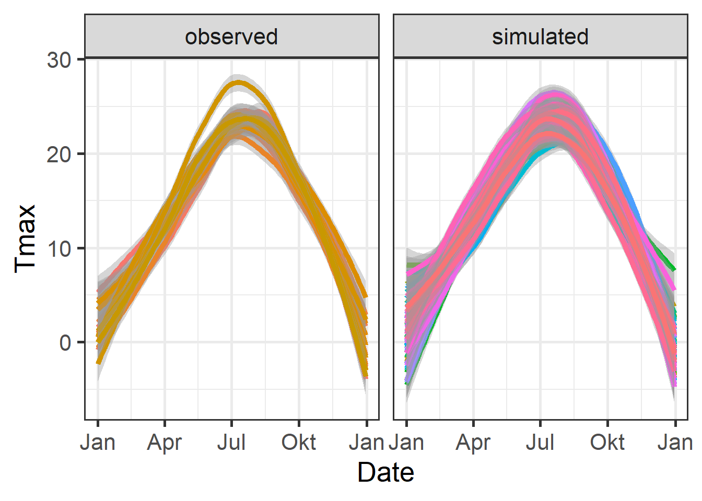
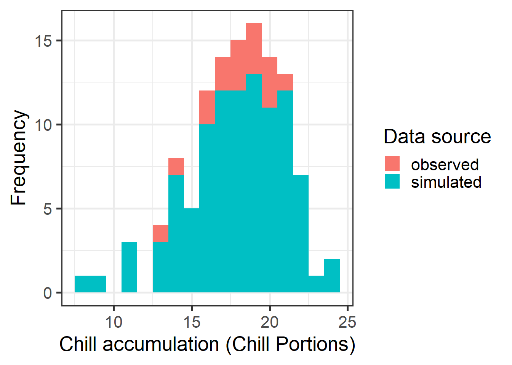

Chapter 14 — Historic temperature scenarios
In this chapter, observed temperature records are extended with simulated scenarios to analyze past temperature patterns and their effects on chill accumulation.
Creating historic temperature scenarios
For the location you chose for previous exercises, produce historic temperature scenarios representing several years of the historic record (your choice).
## Warning: scenario doesn't contain named elements - consider using the following element names:
## 'data', 'reference_year','scenario_type','labels'## Warning: setting scenario_type to 'relative'## Warning: Reference year missing - can't check if relative temperature scenario is validChill accumulation under historic scenarios
Produce chill distributions for these scenarios and plot them and calculating winter chill for observed and simulated data
library(ggplot2)
library(dplyr)
library(chillR)
chill_observed <- Temperature_scenarios %>%
filter(Data_source == "observed") %>%
stack_hourly_temps(latitude = 47.6) %>%
chilling(Start_JDay = 91, End_JDay = 120)
chill_simulated <- Temperature_scenarios %>%
filter(Data_source == "simulated") %>%
stack_hourly_temps(latitude = 47.6) %>%
chilling(Start_JDay = 91, End_JDay = 120)
chill_comparison_full <- cbind(chill_observed, Data_source = "observed") %>%
rbind(cbind(chill_simulated, Data_source = "simulated")) %>%
filter(Perc_complete == 100)Comparison of temperature patterns
# Tmin plot
ggplot(data = Temperature_scenarios, aes(x = Date, y = Tmin)) +
geom_smooth(aes(colour = factor(Year)), show.legend = FALSE) +
facet_wrap(vars(Data_source)) +
theme_bw(base_size = 20) +
scale_x_date(date_labels = "%b")## `geom_smooth()` using method = 'loess' and formula = 'y ~ x'
# Tmax plot
ggplot(data = Temperature_scenarios, aes(x = Date, y = Tmax)) +
geom_smooth(aes(colour = factor(Year)), show.legend = FALSE) +
facet_wrap(vars(Data_source)) +
theme_bw(base_size = 20) +
scale_x_date(date_labels = "%b")## `geom_smooth()` using method = 'loess' and formula = 'y ~ x'
Chill distribution analysis
ggplot(chill_comparison_full, aes(x = Chill_portions)) +
geom_histogram(binwidth = 1, aes(fill = Data_source)) +
theme_bw(base_size = 20) +
labs(fill = "Data source") +
xlab("Chill accumulation (Chill Portions)") +
ylab("Frequency")
Cumulative distribution of chill accumulation
chill_sim <- chill_comparison_full %>%
filter(Data_source == "simulated")
ggplot(chill_sim, aes(x = Chill_portions)) +
stat_ecdf(geom = "step", lwd = 1.5, col = "blue") +
ylab("Cumulative probability") +
xlab("Chill accumulation (Chill Portions)") +
scale_y_continuous(breaks = seq(0,1,0.1)) +
theme_bw(base_size = 20)
Saving scenario and chill data